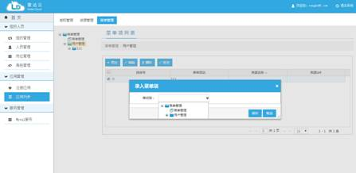

文档编号：ICSS-PM-RD140417-001
|
|
RaportalV6.0 用户使用手册 （Radar
cloud Version 6.0） |
北京中软国际信息技术有限公司
2011年9月
文档版本：1.0
目录
3.1.6 启动、停止和重启动应用......................................................................... 26
第一章 概述
1.1 产品简介
开发者门户(下文简称raportal)，是构建云平台的重要支持能力，为广大开发者、租户提供快速开发的云平台，面向大、中、小企业，以及各行各业。操作简单、简洁大方、功能齐全，特点显著。
1、 基于多租户的设计理念，解决了资源重复使用，而不是每个租户都部署一套raportal。
2、 具有完善的组织人员管理，满足全国99%大、中、小企业组织架构，并以rest接口形式对外开放。
3、 应用管理，对各种第三方APP进行上传到云平台，可进行删除、重启、调整内存、绑定服务等操作。
4、 服务管理，提供了目前经常用到的各种服务，如Mysql服务、BPM服务、EIC服务（数据交换）等。
1.2 面向读者
本文主要面向开发者、租户，用于介绍如何更好使用本平台，管理好该租户下应用对应的用户帐号。从而实现对该应用自身的权限管理。
1.3 本文导读
组织管理是用于创建组织、用户、岗位、角色用的。
应用管理是注册第三方应用并上传应用，并进行授权和菜单创建用的
服务管理，平台提供现有服务进行多个实例创建和简单维护。
第二章 组织人员
2.1 组织管理
2.1.1 组织查询
点击左侧导航栏中组织人员下的组织管理，主页面显示左侧组织树和右侧组织列表，组织列表默认显示所有的组织，选中组织树的某一组织节点时，组织列表展示其下级节点。如图2.1.1-1所示：
图 2.1.1-1 组织管理
1、组织名称：组织的显示名称，必填。
2、组织编码：组织的唯一标识，必填且唯一。
3、组织简称：组织的简称，非必填。
4、组织类型：组织的分类，必选。
注：组织类型分为机构和部门，机构下面可以创建机构和部门，部门下面只能创建部门，不能创建机构；机构的UUID以O_开头，部门的UUID以D_开头。
5、电话号码：组织的电话，非必填。
6、备注：组织的描述，非必填。
2.1.2 组织增加
在组织管理的组织树中，选择要添加下级组织的组织节点，然后在组织列表页面点击“增加”按钮，弹出新建组织页面。如图2.1.2-1所示：
图 2.1.2-1 增加组织
填写完毕后点击保存按钮，若未通过验证，页面会出现红框，若通过验证，则会增加成功，并返回组织列表页面。点击取消按钮，会关闭新建组织弹出框，不做操作。
注：增加组织时，要先在组织树中选择其父组织，如果没有选择父组织，系统默认选择根组织，如图2.1.2-1中的“中软国际”。
2.1.3 组织编辑
在组织管理的组织列表页面中，选中要编辑的组织记录前的复选框，点击“编辑”按钮，弹出编辑组织页面。如图2.1.3-1所示：

图 2.1.3-1 编辑组织
填写完毕后点击保存按钮，若未通过验证，页面会出现红框，若通过验证，则会保存成功，并返回组织列表页面。点击取消按钮，会关闭编辑组织弹出框，不做操作。
注：编辑组织时，组织类型不可修改。
2.1.4 组织查看
在组织管理的组织列表页面中，点击要查看组织信息的组织名称，弹出组织详细信息页面。如图2.1.4-1所示：
图 2.1.4-1 查看组织
点击“关闭”按钮，返回组织列表，不做操作。
2.1.5 组织删除
在组织管理的组织列表页面中，选中要删除的组织记录，弹出提示框。如图2.1.5-1所示：
图 2.1.5-1 删除组织
点击“确定”按钮，选择的数据将被删除；点击取消则返回组织列表，不做操作。
注：组织可进行多删除，谨慎操作。
2.2 人员管理
2.2.1 人员查询
点击左侧导航栏中组织人员下的人员管理，主页面显示左侧组织树和右侧人员列表，人员列表默认显示所有的人员，选中组织树的某一组织节点时，人员列表展示改组织下的所有正常状态人员。如图2.2.1-1所示：
图 2.2.1-1 人员管理
1、姓名：人员的显示名称，必填。
2、人员编码：人员的唯一标识，必填且唯一。
3、登录账号：人员的登录账号，必填且唯一。
4、登录密码：人员登陆时使用的密码，必填。
5、所属部门：人员所署的主部门，必选。
6、所属岗位：人员所属的岗位，必选。
7、电子邮件：非必填。
8、联系电话：非必填。
9、排序：查询人员列表时，人员排序的位置，非必填。
10、状态：人员的状态，分为正常和失效，必选。
11、备注：人员的备注信息，非必填。
注：机构下不能添加人员，只能在部门下添加人员。人员所属部门分为主部门和兼职部门，所属岗位和所属部门必须一一对应。在一个人员下，不能同一个岗位对应几个部门，也不能同一个部门对应几个岗位。
2.2.2 人员增加
在人员管理的组织树中，选择要添加人员的组织节点，然后在人员列表页面点击“增加”按钮，弹出新建人员页面。如图2.2.2-1所示：
图 2.2.2-1 增加人员
填写完毕后点击保存按钮，若未通过验证，页面会出现红框，若通过验证，则会增加成功，并返回人员列表页面。点击取消按钮，会关闭新建人员弹出框，不做操作。
注：机构下不能添加人员，只能在部门下添加人员。
2.2.3 人员编辑
在人员管理的人员列表页面中，选中要编辑的人员记录前的复选框，点击“编辑”按钮，弹出编辑人员页面。如图2.2.3-1所示：
图 2.2.3-1 编辑人员
填写完毕后点击保存按钮，若未通过验证，页面会出现红框，若通过验证，则会保存成功，并返回人员列表页面。点击取消按钮，会关闭编辑人员弹出框，不做操作。
2.2.4 人员查看
在人员管理的人员列表页面中，点击要查看人员信息的姓名，弹出人员详细信息页面。如图2.2.4-1所示：

图 2.2.4-1 查看人员
点击“关闭”按钮，返回人员列表，不做操作。
2.2.5 兼职部门添加
在人员管理的人员列表页面中，点击要添加兼职部门的人员信息记录的“添加机构”，弹出附属机构页面。如图2.2.5-1所示：
图 2.2.5-1 添加兼职部门
点击“增加”按钮，列表中添加一行，选择所属部门和所属岗位；选中记录复选框，点击“删除”按钮，删除兼职部门记录；点击“刷新”按钮，刷新附属机构列表。操作完毕后点击保存按钮，若未通过验证，页面会出现提示框，若通过验证，则会保存成功，并返回人员列表页面。点击关闭按钮，会关闭附属机构弹出框，不做操作。
2.2.6 人员删除
在人员管理的人员列表页面中，选中要删除的人员记录，弹出提示框。如图2.2.6-1所示：
图 2.2.6-1 删除人员
点击“确定”按钮，选择的数据将被删除；点击取消则返回人员列表，不做操作。
注：人员可进行多删除，谨慎操作。
2.3 岗位管理
2.3.1 岗位查询
点击左侧导航栏中组织人员下的岗位管理，主页面显示查询条件和岗位列表，岗位列表默认显示所有的岗位，填写岗位查询条件，点击“查询”按钮，岗位列表展示查询结果。如图2.3.1-1所示：
图 2.3.1-1 岗位管理
1、岗位名称：岗位的显示名称，必填。
2、岗位编码：岗位的唯一标识，必填且唯一。
注：岗位查询条件中的岗位名称和岗位编码都是模糊查询。
2.3.2 岗位增加
在岗位管理的岗位列表页面点击“增加”按钮，弹出新建岗位页面。如图2.3.2-1所示：
图 2.3.2-1 增加岗位
填写完毕后点击保存按钮，若未通过验证，页面会出现红框，若通过验证，则会增加成功，并返回岗位列表页面。点击取消按钮，会关闭新建岗位弹出框，不做操作。
2.3.3 岗位编辑
在岗位管理的岗位列表页面中，选中要编辑的岗位记录前的复选框，点击“编辑”按钮，弹出编辑岗位页面。如图2.3.3-1所示：
图 2.3.3-1 编辑岗位
填写完毕后点击保存按钮，若未通过验证，页面会出现红框，若通过验证，则会保存成功，并返回岗位列表页面。点击取消按钮，会关闭编辑岗位弹出框，不做操作。
2.3.4 岗位查看
在岗位管理的岗位列表页面中，点击要查看岗位信息的岗位名称，弹出岗位详细信息页面。如图2.3.4-1所示：
图 2.3.4-1 查看岗位
点击“关闭”按钮，返回岗位列表，不做操作。
2.3.5 岗位删除
在岗位管理的岗位列表页面中，选中要删除的岗位记录，弹出提示框。如图2.3.5-1所示：
图 2.3.5-1 删除岗位
点击“确定”按钮，选择的数据将被删除；点击取消则返回岗位列表，不做操作。
注：岗位可进行多删除，谨慎操作。
2.4 角色管理
2.4.1 角色查询
点击左侧导航栏中组织人员下的角色管理，主页面显示查询条件和角色列表，角色列表默认显示所有的角色，填写角色查询条件，点击“查询”按钮，角色列表展示查询结果。如图2.4.1-1所示：
图 2.4.1-1 角色管理
1、角色名称：角色的显示名称，必填。
2、角色编码：角色的唯一标识，必填且唯一。
3、描述：角色的描述信息，非必填。
注：角色查询条件中的角色名称和角色编码都是模糊查询。
2.4.2 角色增加
在角色管理中的角色列表页面点击“增加”按钮，弹出新建角色页面。如图2.4.2-1所示：
图 2.4.2-1 增加角色
填写完毕后点击保存按钮，若未通过验证，页面会出现红框，若通过验证，则会增加成功，并返回角色列表页面。点击取消按钮，会关闭新建角色弹出框，不做操作。
2.4.3 角色编辑
在角色管理的角色列表页面中，点击要编辑角色信息的角色名称，弹出编辑角色页面。如图2.4.3-1所示：
图 2.4.3-1 编辑角色
填写完毕后点击保存按钮，若未通过验证，页面会出现红框，若通过验证，则会保存成功，并返回角色列表页面。点击取消按钮，会关闭编辑角色弹出框，不做操作。
2.4.4 角色授权人员
在角色管理的角色列表页面中，点击要授权角色记录的“添加人员”，弹出已授权人员列表页面。如图2.4.4-1所示：
图 2.4.4-1 角色授权
点击“关闭”按钮，返回角色列表，不做操作。
2.4.4.1 添加授权人员
在已授权人员列表页面点击“增加人员”按钮，弹出未授权人员列表页面。如图2.4.4.1-1所示：
图 2.4.4.1-1未授权人员列表
输入查询条件，点击“查询按钮”，选择授权人员，点击保存，授权成功返回已授权人员列表页面，点击关闭，取消操作。
注：未授权人员列表查询条件的姓名、登录账号为模糊查询。
2.4.4.2 删除授权人员
在已授权人员类别页面选中要删除的人员，点击“删除”按钮，弹出提示框。如图2.4.4.2-1所示：
图 2.4.4.2-1删除授权人员
点击“确定”按钮，选择的数据将被删除；点击取消则返回已授权人员列表，不做操作。
注：已授权人员可进行多删除，谨慎操作。
2.4.5 角色删除
在角色管理的角色列表页面中，选中要删除的角色记录，弹出提示框。如图2.4.5-1所示：
图 2.4.5-1 删除角色
点击“确定”按钮，选择的数据将被删除；点击取消则返回角色列表，不做操作。
注：角色可进行多删除，谨慎操作。
第三章 应用管理
3.1 应用管理
点击左侧菜单栏【应用管理】下的【应用列表】菜单，进入应用管理页面，页面将按排序号从小到大显示所有应用信息。如图3.1-1所示：
图3.1-1应用管理
3.1.1 应用列表
在窗口左侧菜单的【应用管理】点击【注册应用】菜单，进入应用注册界面。如图3.1.1-1所示：
图3.1.1-1注册应用
3.1.2 应用详细信息
在【应用管理】页面中选择一个应用点击“查看详情”或者直接点击应用名将打开应用详细信息页面。如图3.1.2-1 3.1.2-2所示：
图3.1.2-1详细信息
点击“已绑定服务”中右侧的“解绑”按钮，将会解绑此服务；点击“未绑定服务”中右侧的“绑定”按钮，将会绑定此服务
图3.1.2-2
详细信息
3.1.3 应用部署新版本
在【应用管理】界面先选中需要编辑的应用（如上图），然后点击“部署新版本”按钮，进入应用更新界面。如图3.1.3-1所示：
图3.1.3-1更新应用
点击“选择文件”按钮选择应用的文件包（java应用为war包）再点击“上传”按钮上传文件；文件上传成功后还要进行应用文件的打包、启动（应用首次启动耗时稍长）。当显示“应用程序已安装并正常启动”后说明应用已正常启动。
3.1.4 删除应用
在【应用管理】页面先选中需要删除的应用，然后点击“删除”按钮。如图3.1.4-1所示：
图3.1.4-1删除应用
再点击“确定”按钮，将会删除应用；点击“取消”则会取消操作，应用不会删除。
注意：删除后不可恢复。
3.1.5 应用搜索
在【应用管理】页面在搜索栏输入查询条件，点击“查询”按钮可以查询应用。如图3.1.5-1所示：
图3.1.5-1查询应用
3.1.6 启动、停止和重启动应用
在【应用管理】页面如下图点击应用列表运行状态一列中的“已启动”或“已停止”即可停止和启动应用，如图2.1.6-1所示：

图3.1.6-1启动和停止应用
点击“重启应用”按钮，应用程序将停止后再启动。如图2.1.6-2所示：
图3.1.6-2重启应用
3.1.7 调整内存
图3.1.7-1调整内存
在【应用管理】页面选中要更新内存的应用，点击操作栏的“调整内存”按钮（如图3.1.7-1），会弹出调整应用内存对话框。如图3.1.7-2所示：
图3.1.7-2调整内存
选择一个新的内存数量，点击“确定”更新内存。
注意：
1.
可用调整的内存数量受限于用户可用的内存数量，如果实例数量乘以应用分配的内存数大于剩余内存与应用原来占用内存的和，则无法调整到此内存数量
3.1.8 调整实例

图3.1.8-1调整实例
在【应用管理】页面选中要更新实例的应用，点击操作栏的“调整实例”按钮（如图3.1.8-1），会弹出调整应用实例对话框。如图3.1.8-2所示：
图3.1.8-2调整内存
选择一个新的实例数量，点击“确定”更新实例数。
注意：
1. 可用调整的实例数量受限于用户可用的内存数量，如果实例数量乘以应用分配的内存数大于剩余内存与应用原来占用内存的和，则无法调整到此实例数量
3.1.9 应用日志
在【应用管理】页面，点击应用列表右侧的“日志”按钮（如图3.1.9.1）将打开应用日志页面。如图3.1.9-2所示：
图3.1.9-1
图3.1.9-2
3.1.10 应用配置-授权
在【应用管理】页面，点击应用列表右侧的“配置”按钮（如图3.1.10-1）将打开应用配置页面。如图3.1.10-2所示：
图3.1.10-1
应用配置页面有“授权管理”、“资源管理”、“菜单管理”三个子页面。“授权管理”页面负责给应用的用户分配角色，如图3.1.10-2所示，在左侧的“角色列表”选择一个角色，在右侧的“资源列表”选择一个资源，点击中间的“授权”按钮完成给角色的相应资源的权限。要解除角色的授权，需要先选中左侧的一个角色，右侧“资源列表”就好显示此角色有授权，取消资源的多选框，再点击“授权”按钮，就解除此角色的相应授权。
图3.1.10-2
3.2 注册应用
3.2.1 注册应用
在窗口左侧菜单的【应用管理】点击【注册应用】菜单，进入应用注册界面。如图2.1.1-1所示：
图2.1.1-1注册应用
注意：
1. 显示名称：应用的显示名称，必填项。
2. 域名：应用的子域名，必填项。
3. 内存：分配给应用地方内存数，必填项。
4.
选择服务：允许应用使用的服务，可不选。
填好相应内容后点击“注册”按钮完成应用注册。注册成功后会显示上传应用安装文件包页面，如图2.1.1-2所示：
图2.1.1-2上传文件
点击“选择文件”按钮选择应用的文件包（java应用为war包）再点击“上传”按钮上传文件；文件上传成功后还要进行应用文件的打包、启动（应用首次启动耗时稍长）。当显示“应用程序已安装并正常启动”后说明应用已正常启动。如图2.1.1-3所示：
图2.1.1-3应用启动成功
3.3 资源管理
3.3.1 资源列表
点击左侧菜单栏【应用列表】下的【配置】菜单，进入应用的配置页面，进入配置页面后，点击【资源管理】选项，页面将展示该应用下绑定的所有资源信息。如图3.3.1-1所示：
图3.3.1-1
3.3.2 管理分组
在创建资源之前，要先创建分组，点击【管理分组】按钮，进入管理分组页面，如图3.3.2-1所示：
3.3.2.1 新增分组
在管理分组列表页面，点击【增加】，填入分组名称、排序号(数字越小，排名越靠前)码并点击【保存】即可完成新增分组的操作，如图3.3.2.1-1所示：
图3.3.2.1-1
3.3.2.2 删除分组
在管理分组列表页面，点击【删除】后，会提示是否确认删除，点击【确定】后即可删除，注意删除的分组不可恢复，如图3.3.2.2-1所示：
图3.3.2.2-1
3.3.3 新增资源
在资源管理列表页面，单击【新增】，跳转到新增资源页面，按照页面提示填入需要的内容并点击【提交】，即可完成新增资源操作，如图3.3.3-所示：
图3.3.3-1
3.3.4 编辑资源
在资源列表页面，选择一条要编辑的资源，点击【编辑】，页面跳转到编辑资源的页面，修改对应值，点击【提交】即可完成编辑资源操作，如图3.3.4-1所示：
图3.3.4-1
3.3.5 删除资源
在资源列表页面，选择一条要删除的数据，单击【删除】按钮，会提示是否确认删除，点击【确定】后即可成功删除资源，如图3.3.5-1所示：
3.3.6 搜索资源
在资源列表页面，搜索资源功能可以按照资源名称、资源代码查询，填入要查询的条件后，单击【查询】按钮，即可刷新列表显示查询结果，如图3.3.6-1所示：
图3.3.6-1
3.3.7 查看资源
在资源列表页面，点击要查看信息的资源，单击【查看】按钮，即可查看该资源的详细信息，如图3.3.7-1所示：
图3.3.7-1
3.4 菜单管理
3.4.1 菜单列表
点击左侧菜单栏【应用列表】下的【配置】菜单，进入应用的配置页面，进入配置页面后，点击【菜单管理】选项，页面将展示该应用下绑定的所有菜单信息。如图3.4.1-1所示：
图3.4.1-1
3.4.2 新增菜单
在菜单列表页面，单击【增加】按钮，填入菜单名称等菜单所需信息，点击【保存】即可完成新增菜单操作，如图3.4.2-1所示：
图3.4.2-1
3.4.3 编辑菜单
在菜单列表页面，单击【编辑】按钮，填入要修改的信息，点击【保存】即可完成编辑菜单操作，如图3.4.3-1所示：
图3.4.3-1
3.4.4 删除菜单
在菜单列表页面，选择一条要删除的数据，单击【删除】按钮，会提示是否确认删除，点击【确定】后即可成功删除菜单，如图3.4.4-1所示：
图3.4.4-1
3.4.5 移动菜单
在菜单列表页面，选择一条要移动的菜单，点击【移动】，选择要移动到的菜单，点击【保存】，即可完成移动菜单操作，如图3.4.5-1所示：

图3.4.5-1
第四章 服务管理
4.1 服务管理
4.1.1 Mysql服务
在左侧导航栏点击【服务管理】下的【Mysql服务】，可进入到对Myql服务管理页面，如图4.1.1-1所示。服务实例列表列出了服务的各项信息如数据库名、IP地址（分内网IP和外网IP）、用户名、密码等。点击列表右侧的“删除”按钮，可以删除此项服务实例。
图4.1.1-1
Mysql服务管理
点击“创建实例”按钮，弹出创建服务实例按钮。如图4.1.1-2
所示。输入一个实例名称再选择一个服务计划，点击“确定”按钮就创建了Mysql服务的一个实例。Mysql服务实例即为在Mysql服务上为用户创建的一个数据库。
图4.1.1-2
Mysql服务管理